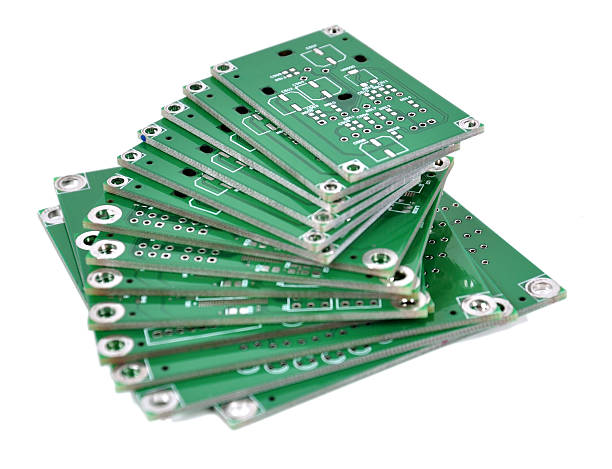
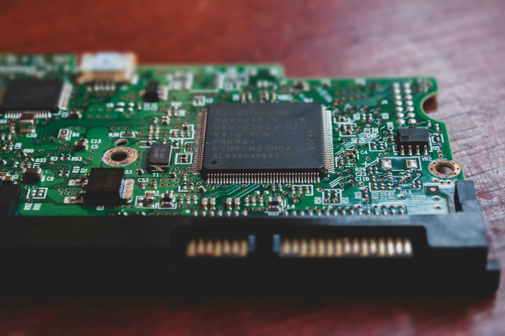
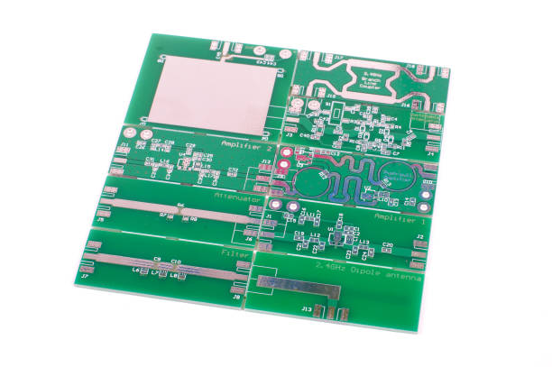
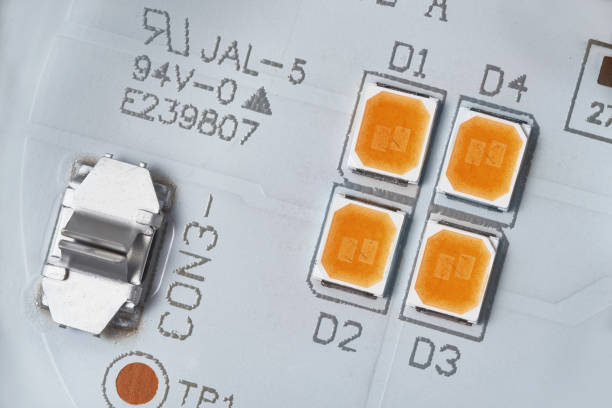

product-01.jpg
product-01.jpg
단면 PCB
한쪽 면에 회로가 형성되는 기본형 PCB로, 단순 회로 및 일반 전자제품에 적합합니다.
Gallery
성화 하이텍은 단면, 양면, 다층 PCB 등 다양한 회로기판 제작에 대응합니다. 개발 샘플부터 소량 생산, 반복 양산까지 고객 사양에 맞춰 상담 및 제작 방향을 안내드립니다.
product-01.jpg
한쪽 면에 회로가 형성되는 기본형 PCB로, 단순 회로 및 일반 전자제품에 적합합니다.

product-02.jpg양면에 회로 구성이 가능한 PCB로, 제한된 공간에서 효율적인 회로 설계가 가능합니다.

product-03.jpg여러 층의 회로를 적층한 PCB로, 고밀도·고기능 전자제품에 적합합니다.

product-04.jpg내열성과 절연성이 우수한 FR-4 소재 기반 PCB로, 일반 산업용 전자기기에 폭넓게 사용됩니다.

product-05.jpg방열 성능이 필요한 LED, 전원장치 등 고열 발생 제품에 적합한 PCB입니다.
 product-06.jpg
product-06.jpg
고내열성과 절연성이 필요한 특수 용도에 적용되는 고신뢰성 PCB입니다.